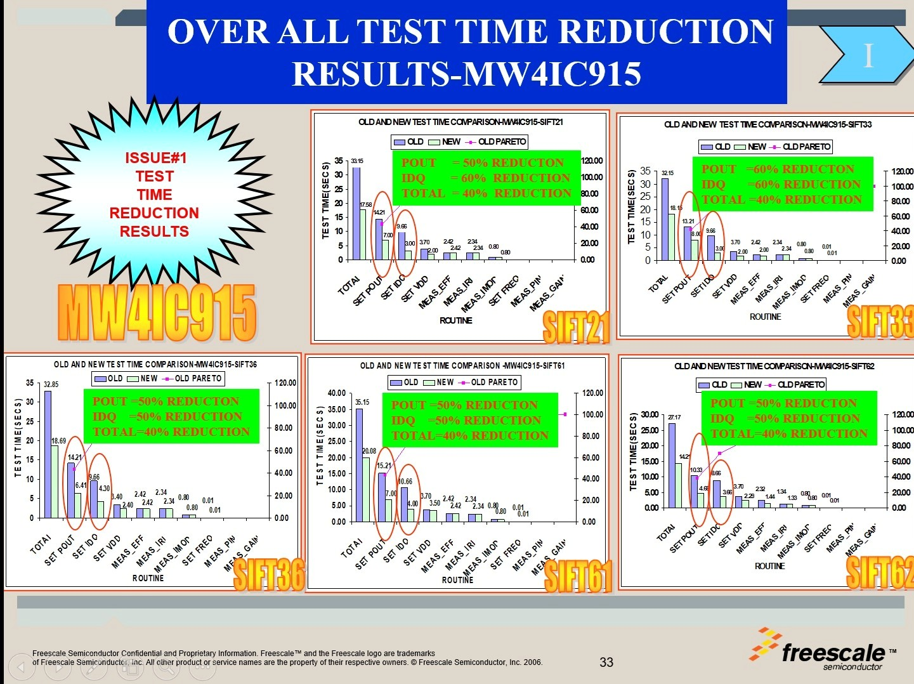

ATE Debugging Impact – Real Results, Real Recognition
These are not just awards. These are validated engineering breakthroughs that eliminated failure risks, reduced cost, and saved hundreds of tester hours across platforms.

EOS Elimination (Poka-Yoke)
➤ Reduced scrap cost by 50%
➤ Yield exceeded goal targets
➤ Recognized with Bronze Medal – TEA

Test Time Reduction (DMAIC)
➤ Reduced RF test time from 260s → 94s
➤ Applied Lean Six Sigma (DMAIC)
➤ Resulted in higher throughput + lower cost
➤ Earned Bronze Medal – TEA
“Results are best explained by performance – not just words.”